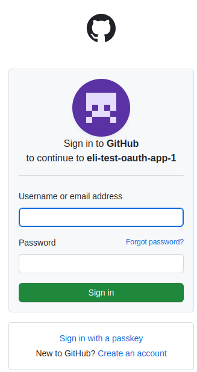

It's common to see web applications that let you log in through third-party services. "Sign in with Google" is particularly popular; on developer-oriented websites, "Sign in with GitHub" also pops up quite a bit. In this post, I want to briefly explore OAuth - the technology that enables these delegated logins, and present some ways to integrate GitHub login in your Go service. Signing in through Google is covered in a separate post.
A note about authentication terminology:
- Authentication (authn): is the process of verifying the identity of a user or entity. It answers the question, "Who are you?", typically through credentials like usernames and passwords, 2FA etc.
- Authorization (authz): is the process of determining what permissions an authenticated user has with a given service (e.g. Editor, Commenter or Viewer on Google Documents).
This post is about authn, though GitHub really provides a more general authz mechanism. In GitHub, when you attempt to use OAuth login, you ask for specific permissions (called "scopes") ahead of time; so a user authentication process combines authn (does this user have a valid GitHub account?) with authz (can this app get the following permissions to the user's account?)
We try to focus only on authn though, not asking GitHub for any particular permissions other than verifying that a user has an account and getting some basic user information (email) that can be used to uniquely identify the user in our application.
This post provides code samples for accomplishing this task in three ways:
- Using nothing but the Go standard library
- Using a semi-standard package for handling some of the OAuth minutiae, saving some code
- Using a third-party package for handling more of the process, saving even more code
A brief overview of OAuth
OAuth is an authorization standard; currently in version 2.0, it's formally described in RFC 6750. In this post I'll only provide a brief introduction to the standard in the context of the GitHub authentication flow I'm describing; I recommend reading more - start with the Wikipedia page and follow links from there as needed.
Here's a useful diagram describing the OAuth 2.0 (it's taken from this post by Digital Ocean, which is also a good introduction to the subject):

When we want to provide a "Sign-in with GitHub" in our application, the actors involved in the diagram are:
- Application (or client): is our application - a web app that wants to allow users to log in with their GitHub account rather than (or in addition to) implementing its own authentication flow.
- User: wants to log into our app, and has a GitHub account.
- User-agent: the user's web browser
- Auth Server: the GitHub OAuth authorization server
The steps involved are:
- The user visits the application's website and chooses to log in with GitHub credentials. The application redirects the user to the GitHub auth server which notifies them that "Application FOO" wants them to log in.
- The user logs into GitHub; note that this is happening on GitHub's website, in a secured HTTPS session vs. GitHub's server. The user enters their email, password and 2FA if required.
- If the login is successful, the auth server redirects the user's browser back to the application, and provides the application with a temporary code it can use to ask for access tokens.
- The application uses the temporary code from GitHub along with a secret it has pre-registered with GitHub to request an access token to the user's account.
- GitHub checks that everything is kosher and provides an access token to the application.
From this stage on, the application can use the token to query the GitHub API on behalf of the logged-in user, based on the permissions (or "scopes") the user agreed to provide to the application [1]. For logging in, the application just needs to know what the user's email address is.
One important aspect to understand about OAuth for web applications is that it leverages HTTP redirection (status code 301) to route the user between the different servers involved. This is important for user control, security and also convenience (for example, it allows us to register localhost endpoints with GitHub for testing). The way it works is that in step (1) when our application sends the user to GitHub, it adds a redirection URL for GitHub in a request parameter; GitHub uses this to redirect the user back to our page in step (3). We'll see this in action soon.
Sample 1: GitHub OAuth flow using raw stdlib
In our first sample, we're not going to be using any 3rd party packages; instead, we implement a complete GitHub auth flow using the Go standard library.
This sample follows the GitHub documentation: Authorizing OAuth apps, as described in the "Web application" flow [2]. The steps outlined on that page are directly mapped to steps in my sample Go program. If you want to follow along, make sure to register an application with GitHub, set a compatible callback path and write down your client ID and client secret; my code expects these to be in the env vars GITHUB_CLIENT_ID and GITHUB_CLIENT_SECRET, respectively.
Our application starts by registering some HTTP routes:
// These should be taken from your GitHub application settings
// at https://github.com/settings/developers
var GithubClientID = os.Getenv("GITHUB_CLIENT_ID")
var GithubClientSecret = os.Getenv("GITHUB_CLIENT_SECRET")
func main() {
if len(GithubClientID) == 0 || len(GithubClientSecret) == 0 {
log.Fatal("Set GITHUB_CLIENT_* env vars")
}
http.HandleFunc("/", rootHandler)
http.HandleFunc("/login/", githubLoginHandler)
http.HandleFunc("/github/callback/", githubCallbackHandler)
addr := "localhost:8080"
fmt.Printf("Listening on: http://%s\n", addr)
log.Panic(http.ListenAndServe(addr, nil))
}
When the server runs, the user is expected to visit the root route /, where they're presented with a link to "Log in with GitHub". This is done with the following handler:
const rootHTML = `
<h1>My web app</h1>
<p>Using raw HTTP OAuth 2.0</p>
<p>You can log into this app with your GitHub credentials:</p>
<p><a href="/login/">Log in with GitHub</a></p>
`
func rootHandler(w http.ResponseWriter, r *http.Request) {
fmt.Fprint(w, rootHTML)
}
Once the user clicks the "log in" link, they're taken to the /login/ handler:
func githubLoginHandler(w http.ResponseWriter, r *http.Request) {
// Step 1: Request a user's GitHub identity
//
// ... by redirecting the user's browser to a GitHub login endpoint. We're not
// setting redirect_uri, leaving it to GitHub to use the default we set for
// this application: /github/callback
// We're also not asking for any specific scope, because we only need access
// to the user's public information to know that the user is really logged in.
//
// We're setting a random state cookie for the client to return
// to us when the call comes back, to prevent CSRF per
// section 10.12 of https://www.rfc-editor.org/rfc/rfc6749.html
state, err := randString(16)
if err != nil {
panic(err)
}
c := &http.Cookie{
Name: "state",
Value: state,
Path: "/",
MaxAge: int(time.Hour.Seconds()),
Secure: r.TLS != nil,
HttpOnly: true,
}
http.SetCookie(w, c)
redirectURL := fmt.Sprintf("https://github.com/login/oauth/authorize?client_id=%s&state=%s", GithubClientID, state)
http.Redirect(w, r, redirectURL, 301)
}
The comment explains how this maps to step 1 in the documented GitHub flow. The note about redirect_url is important; typically the auth server expects a redirect_url path. However, it should also be configured when you register the application. Here I opt for using the default configuration and am not passing redirect_url explicitly.
This code implements CSRF protection by generating a random string, storing it in a cookie for this user's session and sending it with the state URL parameter to GitHub. When GitHub calls our redirect URL, it will attach this state - we can thus verify the request is legit and not a malicious attack.
At this point the user is presented with a familiar "sign-in to GitHub" screen on GitHub's website:
The user verifies their credentials vs. GitHub; then GitHub redirects the user's browser back to the redirect URL provided (or configured in the GitHub app settings). In our case, the redirect goes to http://localhost:8080/github/callback/ [3], which is mapped to githubCallbackHandler. Here's the first part of this function, implementing step 2 from the documented GitHub flow:
func githubCallbackHandler(w http.ResponseWriter, r *http.Request) {
// Step 2: Users are redirected back to your site by GitHub
//
// The user is authenticated w/ GitHub by this point, and GH provides us
// a temporary code we can exchange for an access token using the app's
// full credentials.
//
// Start by checking the state returned by GitHub matches what
// we've stored in the cookie.
state, err := r.Cookie("state")
if err != nil {
http.Error(w, "state not found", http.StatusBadRequest)
return
}
if r.URL.Query().Get("state") != state.Value {
http.Error(w, "state did not match", http.StatusBadRequest)
return
}
// We use the code, alongside our client ID and secret to ask GH for an
// access token to the API.
code := r.URL.Query().Get("code")
requestBodyMap := map[string]string{
"client_id": GithubClientID,
"client_secret": GithubClientSecret,
"code": code,
}
requestJSON, err := json.Marshal(requestBodyMap)
if err != nil {
panic(err)
}
req, err := http.NewRequest("POST", "https://github.com/login/oauth/access_token", bytes.NewBuffer(requestJSON))
if err != nil {
panic(err)
}
req.Header.Set("Content-Type", "application/json")
req.Header.Set("Accept", "application/json")
resp, err := http.DefaultClient.Do(req)
if err != nil {
http.Error(w, "unable to connect to access_token endpoint", http.StatusInternalServerError)
return
}
respbody, _ := io.ReadAll(resp.Body)
// Represents the response received from Github
var ghresp struct {
AccessToken string `json:"access_token"`
TokenType string `json:"token_type"`
Scope string `json:"scope"`
}
json.Unmarshal(respbody, &ghresp)
// {...}
The function does just what it says on the box: after verifying the CSRF token, it provides the code it got from GitHub back to GitHub's OAuth access token endpoint, along with a secret shared only by the application and GitHub (it's in the app settings). In return it gets a token that can be used as a bearer token for HTTP auth when accessing the GitHub API on behalf of the logged-in user. Here's the rest of the code:
func githubCallbackHandler(w http.ResponseWriter, r *http.Request) {
// {...}
// Step 3: Use the access token to access the API
//
// With the access token in hand, we can access the GitHub API on behalf
// of the user. Since we didn't provide a scope, we only get access to
// the user's public information.
userInfo := getGitHubUserInfo(ghresp.AccessToken)
w.Header().Set("Content-type", "application/json")
fmt.Fprint(w, string(userInfo))
}
// getGitHubUserInfo queries GitHub's user API for information about the
// authorized user, given the access token received earlier.
func getGitHubUserInfo(accessToken string) string {
// Query the GH API for user info
req, err := http.NewRequest("GET", "https://api.github.com/user", nil)
if err != nil {
panic(err)
}
req.Header.Set("Authorization", "Bearer "+accessToken)
resp, err := http.DefaultClient.Do(req)
if err != nil {
panic(err)
}
respbody, _ := io.ReadAll(resp.Body)
return string(respbody)
}
The end result of this is dumping a JSON map with the logged-in user's information to output. This is just an example, of course. A real web application would now use the user's email as a unique ID to look up things in its own DB - it knows the user is authenticated now!
Sample 2: using the x/oauth2 package
The second sample uses the golang.org/x/oauth2 package to take care of some of the OAuth details instead of doing everything manually. Much of the code remains the same - I just want to highlight some places where x/oauth2 is used instead of writing code from scratch. First, we create a configuration struct in our main function:
conf := &oauth2.Config{
ClientID: GithubClientID,
ClientSecret: GithubClientSecret,
Scopes: []string{},
Endpoint: github.Endpoint,
}
Here github refers to the x/oauth2/github subpackage, which holds some constants useful for GitHub OAuth. Specifically, github.Endpoint is an alias to:
var GitHub = oauth2.Endpoint{
AuthURL: "https://github.com/login/oauth/authorize",
TokenURL: "https://github.com/login/oauth/access_token",
DeviceAuthURL: "https://github.com/login/device/code",
}
So our code needn't have these paths hard-coded.
In githubLoginHandler, we can use the AuthCodeURL method instead of constructing the URL manually.
Finally, in githubCallbackHandler we get help in two ways:
code := r.URL.Query().Get("code")
tok, err := lf.conf.Exchange(context.Background(), code) // 1: token exchange
if err != nil {
log.Fatal(err)
}
// This client will have a bearer token to access the GitHub API on
// the user's behalf.
client := lf.conf.Client(context.Background(), tok) // 2: client with token
resp, err := client.Get("https://api.github.com/user")
if err != nil {
panic(err)
}
respbody, _ := io.ReadAll(resp.Body)
userInfo := string(respbody)
w.Header().Set("Content-type", "application/json")
fmt.Fprint(w, string(userInfo))
First, we can call Exchange to ask x/oauth2 to perform the "code for token" exchange step. Second, we get an HTTP client with the bearer token already configured and don't have to do it manually. The resulting code is somewhat shorter and has fewer hard-coded operations, delegating some of the work to the x/oauth2 package.
Sample 3: using the gologin package
Finally, our third sample uses the third-party gologin package. gologin implements helpers for logging into various services like GitHub, Google and Twitter. It encapsulates even more functionality. Here's the relevant part of the main function in this sample:
conf := &oauth2.Config{
ClientID: GithubClientID,
ClientSecret: GithubClientSecret,
Scopes: []string{},
Endpoint: oauth2github.Endpoint,
}
// gologin has a default cookie configuration for debug deployments (no TLS).
cookieConf := gologin.DebugOnlyCookieConfig
http.HandleFunc("/", rootHandler)
loginHandler := github.LoginHandler(conf, nil)
http.Handle("/login/", github.StateHandler(cookieConf, loginHandler))
callbackHandler := github.CallbackHandler(conf, http.HandlerFunc(githubCallbackHandler), nil)
http.Handle(callbackPath, github.StateHandler(cookieConf, callbackHandler))
gologin relies upon the x/oauth2 package and uses its Config. The rest of the code registers the HTTP handlers, and it has two interesting properties:
- gologin handles the CSRF cookie management for us, using its StateHandler middleware.
- It also handles the token exchange with GitHub automatically, by exposing a CallbackHandler middleware that wraps our githubCallbackHandler handler.
Our handler gets user information through the request context:
func githubCallbackHandler(w http.ResponseWriter, r *http.Request) {
ctx := r.Context()
githubUser, err := github.UserFromContext(ctx)
if err != nil {
http.Error(w, err.Error(), http.StatusInternalServerError)
return
}
w.Header().Set("Content-type", "application/json")
buf, _ := json.Marshal(githubUser)
fmt.Fprint(w, string(buf))
}
That's about it! gologin encapsulates the rest of the functionality through its middleware, enabling GitHub logins in only a handful of lines of code.
Which approach to choose?
All the samples in this post accomplish the same goal - they let a web app delegate its user authentication to GitHub. The samples are presented in increasing level of encapsulation and external dependency - from a completely raw HTTP-based approach using only the stdlib, to using a package that does almost all the work for us.
How to choose between these is a question every project may answer differently, based on their stage, resources and approach to dependencies. I'd probably go for the second approach - using x/oauth2 - since it balances dependencies with utility.
The x/oauth2 package is "semi-official", maintained by some members of Go team and other Go users at Google, and it's helpful without being magical. That said, the gologin package also looks pretty solid, so that could be a good option too if your tolerance to third-party dependencies is higher.
Code
The full code for this post is available on GitHub.
| [1] | This is an artifact of using GitHub's authz flow for authn. Generally, this flow allows applications (think CI systems) to have broader access to the user's GitHub account in order to render some useful service to the user. In our case we only use the flow for authn, so all we need is "basic account access", to know that the user indeed has valid access to a GitHub account and the public details of this account. |
| [2] | Kudos to GitHub for the solid documentation they have on this topic. They also have a complete sample in Ruby which is similar to my Sample 1. |
| [3] | This is a good time to admire the choice OAuth made to use redirects for this step. Consider the following questions: without redirects, how would you tell GitHub to dial to some arbitrary path on your localhost? Also, without redirects how could this request use the user's browser cookies to enable easy storage of CSRF tokens? |